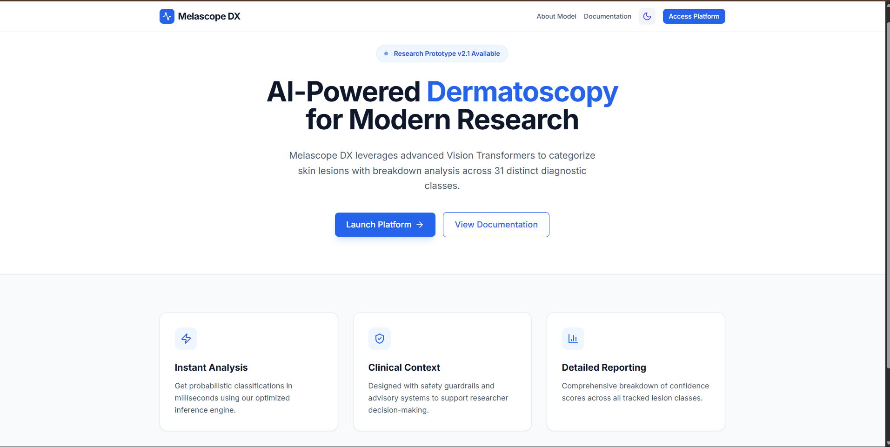

MelascopeDx – AI Dermatology Screening Platform
- Built a full-stack AI healthcare platform for dermatological condition screening, achieving 97% classification accuracy in supported evaluation scenarios.
- Designed a clinician-style interface with patient history, screening records, and automated reporting to make image-based assessment more structured and usable.
- Created an AI-assisted screening workflow to improve early decision support and streamline diagnostic review.